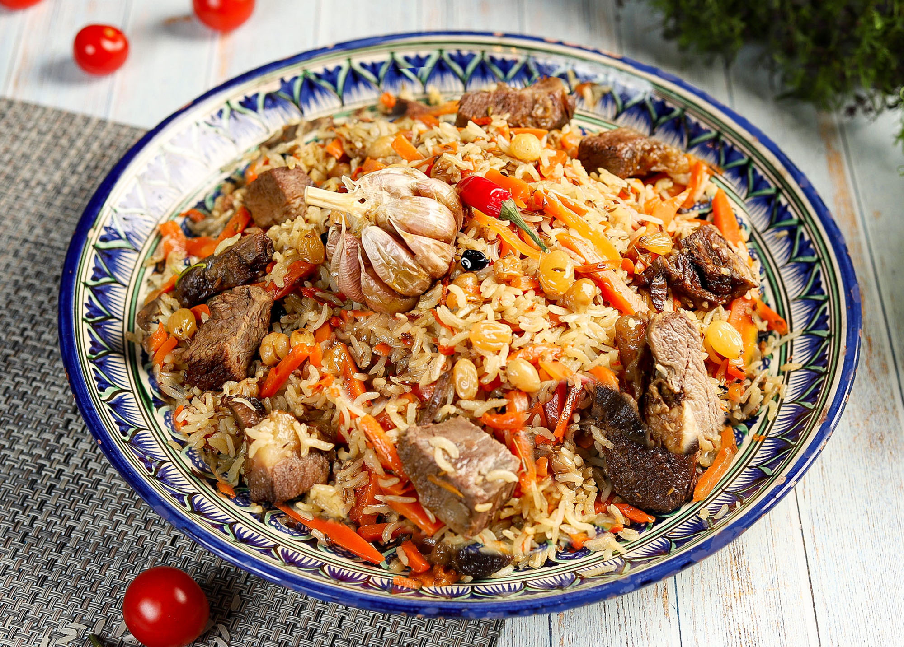

Рецепты приготовления блюд
На этом сайте вы сможете увидеть подробные рецепты известных блюд , а так же активно применять их в готовке после изучения
Плов:
Плов – блюдо восточной кухни. Слово «плов» пришло в русский язык из тюркско-татарских языков, где оно звучит как «пилав». Происхождение плова связывают с Индией и Персией, откуда он распространился по всей Азии.
Подробней о плове

Существуют тысячи рецептов как готовить плов, однако любой плов готовится из двух составных частей: это мясная, рыбная или другая заправка (в среднеазиатском варианте «зирвак» или в иранском «гара»), и рис, или, значительно реже, другая крупа – пшеница, горох, кукуруза, маш. По сути, плов чем-то напоминает мясную рисовую кашу, первые русские толковые словари так его и определяли. Однако главное отличие плова от каши в том, что зерно для плова не варится, а тушится. Приготовление плова – настоящее искусство. Очень важно правильно подобрать правильный рис для плова – он не должен развариваться, зёрна должны легко отделяться друг от друга. Существует два главных варианта как приготовить плов, или две основные технологии приготовления плова – узбекская и азербайджанская.
Плов, рецепт приготовления которого предусматривает совместное приготовление зирвака и крупы, называется среднеазиатский или узбекский. Единственное исключение – самаркандский плов, который готовится по азербайджанской технологии. Различные рецепты плова возникают из-за выбора и комбинации зирвака, зерна, овощей, специй, последовательности закладки и продолжительности обработки продуктов, оговоренные рецептом плова. Как известно, в Азии обычно готовят плов из баранины. Рис для приготовления плова по среднеазиатской технологии должен быть специальный - это красный узгенский рис или «девзира». Обязательным овощем считается лишь жёлтая морковь. Из специй, как правило, используют зиру, красный перец, барбарис, чеснок, а также курагу, айву и изюм. Для узбекского плова очень важным является предварительное прокаливание масла. Традиционно используют смесь растительного (чаще хлопкового, реже подсолнечного, кунжутного) масла и животного жира (бараньего, козьего). Узбекский плов готовят исключительно в большом толстостенном чугунном, алюминиевом или медном казане, на открытом огне и на улице, потому что с последствиями прокаливания масла трудно справится даже очень хорошей вытяжке.
В азербайджанском (иранском или турецком) варианте плова заправка, «гара», и крупа готовятся по отдельности и соединяются лишь на общем блюде или даже на тарелке. Гара может быть мясной, рыбной, яичной, овощной. Почти во всех рецептах азербайджанского плова используются фрукты – алыча, гранат, абрикос и т.п. Например, плов из куры по-персидски готовят исключительно с гранатовым соком. Рис для плова всегда отваривают с маслом - сливочным или топлёным. В отличие от узбекского плова, азербайджанский плов подают не горячим, а чуть тёплым, но ещё с не застывшим маслом.
Здесь следует вспомнить турецкую поговорку «Сколько в мире существует мусульманских городов, столько в мире существует рецептов плова», и оговориться, что в разных странах можно найти массу вариаций, сочетающих оба способа приготовления плова. При этом сегодня самым распространённым вариантом плова всё же является узбекский плов. Соединяя в казане рис и мясную часть с овощами и специями, готовят плов из свинины (что в принципе невозможно в мусульманских странах), плов с курицей, плов из говядины – продуктов, которые не популярны в Средней Азии. Оригинальны вкусом обладает сладкий плов по-индийски с сухофруктами. В общем, выбирайте рецепт плова, приготовьте это замечательное блюдо и пусть вам будет вкусно! Как приготовить плов. Наши советы Рис для плова. Не используйте индийские или тайские сорта риса - басмати или жасмин. Они слишком мягкие, быстро развариваются и превратятся в кашу. Если вы не найдёте девзира или ошпар, возьмите итальянский рис, предназначенный для паэльи. Масло для плова. Используйте только рафинированное масло, ароматное масло будет заглушать запах плова. Специи для плова. Обязательными являются только кумин, острый красный перец и барбарис. Всё остальное – на ваш вкус.
Часто используемые ингредиенты: лук репчатый, морковь, чеснок, масло растительное, рис, рис длиннозерный, зира, куркума молотая, свинина, приправа, барбарис, лавровый лист, кориандр, куркума, лук, баранина, паприка молотая, базилик, перец красный молотый
Продукты:
| Мясо (курица, баранина и т.д.) | 1 кг |
|---|
| Рис (длиннозерный пропаренный или другой рис) | 1 кг |
|---|
| Морковь | 1 кг |
|---|
| Чеснок | 2 головки |
|---|
| Перец острый свежий | 2 стручка |
|---|
| Зира или другие пряности | по вкусу |
|---|
| Соль | по вкусу |
|---|
| Масло растительное | 250-300 мл |
|---|